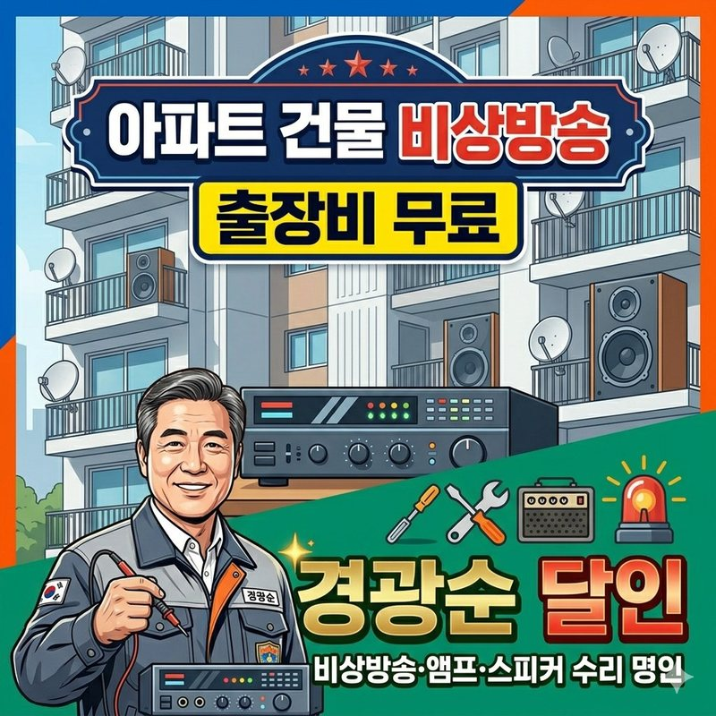
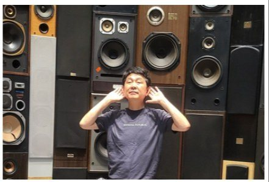

아파트 · 빌딩 · 교육기관 · 군부대
비상방송,
통째 교체 말고
고쳐서 씁니다
소방점검에서 “비상방송 송출 불량”, “앰프 연동 불량” 지적을 받으셨나요? 40년 경력 경광순 달인이 무료로 출장 진단하고, 원인만 정확히 고칩니다.
- 출장비 무료현장 방문·정밀 진단
- 30만원 내외수신기 2개 연동 기준
- 풀 테스트화재 신호 → 전 층 송출
현장 상황에 따라 금액이 달라질 수 있습니다.

WHY
비상방송, 왜 지금 고쳐야 할까요?
화재나 비상시 대피 안내 방송이 먹통이라면, 단순한 기계 고장이 아니라 인명 피해로 이어집니다.
- 10초 안에 송출돼야 합니다화재안전성능기준(NFPC 202)에 따라 화재 신호가 들어오면 10초 안에 경보음과 대피 음성이 나와야 합니다.
- 지적사항은 권고가 아닙니다소방점검 후 “비상방송 송출 불량”, “앰프 연동 불량” 지적은 입주민 안전과 직결되고, 이행하지 않으면 법적 불이익이 따를 수 있습니다.
- 사고 뒤엔 책임 소재를 묻습니다화재는 나기 전엔 아무 문제가 없지만, 나고 나면 경보·대피 설비가 제대로 작동했는지 철저히 조사합니다.
CHECK
이런 증상, 하나라도 있나요?
- 방송에 “지지직” 잡음
- 음성은 나오는데 사이렌이 안 울림
- 화재 신호는 넘어가는데 소리가 안 들림
- 수신반에서 앰프로 화재 신호가 안 넘어감 (연동 불량)
- 사이렌이 잠깐 나다 멈추거나 작아짐
- 사이렌 후 대피 음성 안내가 안 나옴
- 특정 층·동만 방송이 안 나옴
- 전원 불안정, 재부팅 반복
하나라도 해당되면 지금 무료 진단을 받아보세요. 신청하기 →
DATA
비상방송 고장 원인 TOP 8
현장 수리 기록을 바탕으로 정리한 고장 원인과 점검 우선도입니다. 위쪽일수록 자주 고장 나고, 먼저 점검해야 합니다.
| 순위 | 고장 원인 | 세부 원인 | 주요 증상 | 발생 빈도 | 점검 우선도 |
|---|---|---|---|---|---|
| 1 | 전원부 이상 | SMPS 노후, 콘덴서 열화, 접지 불량, 전원선 단선 | 전원 불가, 재부팅, 잡음 | 매우 높음 | ★★★★★ |
| 2 | 내부 부품 노후 | 전해콘덴서 팽창, 릴레이 접점 불량, 냉땜 | 음질 저하, 간헐 동작 | 높음 | ★★★★★ |
| 3 | 스피커·배선 문제 | 스피커 유닛 소손, 배선 단선·합선 | 특정 구역 무음, 소리 찢어짐 | 높음 | ★★★★★ |
| 4 | 증폭부(앰프) 고장 | 출력 트랜지스터 손상, 과부하, 방열 불량 | 출력 저하, 보호회로 작동 | 중간 | ★★★★★ |
| 5 | 제어부·메인보드 | MCU 오류, 메모리 손상, 펌웨어 이상 | 버튼 무응답, 자동방송 실패 | 중간 | ★★★★★ |
| 6 | 마이크·입력장치 | 마이크 수명, 케이블 접촉불량 | 음량 작음, 하울링 | 보통 | ★★★★★ |
| 7 | 환경 요인 | 습기, 먼지, 고온, 결로 | 오동작, 부식 | 보통 | ★★★★★ |
| 8 | 외부 요인(낙뢰) | 낙뢰 유입, 통신선 방해 | 보드 전소, 포트 파손 | 낮음 | ★★★★★ |
REPAIR
부위별 수리 항목
| 고장 부위 | 증상 · 수리 내용 | 정비 포인트 |
|---|---|---|
| 메인 앰프 / 랙 | 전원 불량, 출력 저하, 특정 층 방송 시 과전류 차단, SMPS 보수·교체 | 예비전원(축전지) 성능 검사 포함 |
| 화재 수신기 연동부 | 소방 신호(도트·릴레이) 접점 불량, 연동 셀렉터 오류, 비상 멘트 음원 칩 교체 | 소방서 점검·화재안전조사 지적 단골 항목 |
| 선로 단선 / 단락 | 리모델링·노후로 생긴 쇼트 추적, 단락보호장치(퓨즈·파워디스트리뷰터) 정상화, 층별 절연저항 측정 | 한 층이 쇼트나도 다른 층은 정상 송출 |
| 스피커 / 감쇄기 | 소리 찢어짐·무음 스피커 교체, 매장 볼륨조절기(감쇄기) 3선식 화재 연동 배선 수정 | 평소엔 음악, 비상시엔 최대 음량 강제 방송 |
흔한 견적
방송 랙 시스템 통째 교체수백 ~ 수천만 원달인명인
원인 진단 후 부품·선로만 수리수신기 2개 연동 기준 30만원 내외사용 연한, 브랜드, 송출 방식과 관계없이 수리합니다. 금액은 현장 상황에 따라 달라질 수 있습니다.
CASE
실제 사례 — 신반포아파트 비상방송설비 보수

진단 결과
- 전원부 노후 — SMPS 내부 콘덴서 열화, 장시간 사용 시 출력 불안정, 앰프 과부하 흔적, 비상방송 시 음압 부족
- 스피커 라인 불량 — 일부 동 배선 접촉 불량으로 특정 층 방송 송출 안 됨
수리 · 보수
- 전원부 주요 콘덴서 선제 교체
- 증폭부 출력 소자 및 방열 상태 개선
- 문제 구역 스피커 라인 재정비
- 우선방송 릴레이 교체 및 동작 재시험
- 정전 가정 예비전원 시험 + 화재 신호 연동 자동방송 시험
결과
- 전 구역 방송 정상 송출
- 비상 시 우선방송 즉시 작동
- 음성 명료도 개선 · 소방 법정점검 기준 충족
“이전에는 방송이 나와도 긴가민가 불안했는데, 이제는 소방서 점검에도 자신 있게 설명할 수 있는 상태가 되었습니다.”— 관리사무소 관계자
MASTER
담당 달인
 달인
달인이 서비스의 담당 달인 · 비상방송·앰프
경광순 달인경력 40년
“딱 보면 압니다. 바로 핵심 문제를 파악합니다.”
- 방송장비 수리·보수 40년
- 아파트·빌딩·교육기관·군부대
- 브랜드·연식·송출방식 무관 수리
- 전원부·앰프·스피커 라인 복합 고장 진단
- 화재 연동 자동·우선 방송 기능 복구
- 통째 교체 대신 부품 단위 수리로 비용 절감
전원부 콘덴서 선제 교체, 출력 소자·방열 개선, 문제 구역 스피커 라인 재정비 후 정전·화재 가정 시험까지 완료. “이제는 소방서 점검에도 자신 있게 설명할 수 있다”는 관리사무소 평가.

- “딱 보면 압니다.” 40년 방송장비 수리 경력으로 핵심 문제를 바로 짚습니다.
- 제조사 브랜드와 관계없이, 언제 어디서나 출장 수리합니다.
- 일반 건물은 물론 강원도 최전선 부대, 해병대·공군부대, 남쪽 해안부대까지 군 방송 장비 시공·수리 경험이 있습니다.
PROCESS
무료 진단부터 실연동 테스트까지
- 접수·문진
지적명령서·오작동 증상 확인
- 명인 출동
랙 회로·소방 법규 숙련 전문가
- 선로·장비 계측
오실로스코프·메거로 원인 특정
- 부품·선로 보수
기판 수리, 쇼트 구간 보수
- 실연동 테스트
화재 신호 투입, 전 층 스피커 검증
비상방송 무료 출장 센터 — 소리가 나오는 것을 넘어, 화재 신호에 앰프가 즉시 반응해 사이렌과 대피 방송이 나오는지까지 확인합니다.
OTHER DOORS
다른 문도 열어보세요
-
No. 01 FIRE SAFETY
소방안전
우리 건물, 올해 점검은 끝났나요?
법정 소방점검부터 셀프점검, 소화기 납품, 실제 화재안전 사례까지.

 담당 달인 강현준 · 이이철
ENTER
담당 달인 강현준 · 이이철
ENTER
-
No. 03 LEGAL INSPECTION
6대 법정점검
놓치고 있는 법정 의무는 없나요?
정보통신, 기계설비, 저수조, 소독방역, 공기질, 승강기. 매달 돌아오는 의무를 한 번에 챙깁니다.


 담당 달인 경광순 · 강경훈 · 박청수 외 3인
ENTER
담당 달인 경광순 · 강경훈 · 박청수 외 3인
ENTER
-
No. 04 BUILDING CARE
건물관리
관리비는 줄이고, 사고는 막을 수 없을까요?
보험부터 종합건물관리, 무인관리, 주차장, 청소·경비, 관리비 절감까지.


 담당 달인 이현 · 김명수 · 강경훈 외 4인
ENTER
담당 달인 이현 · 김명수 · 강경훈 외 4인
ENTER